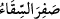

aynı noktaya dönmesine kadar geçen süreyi, şemsî senenin başlangıcı kabul ederler.
Çünkü Güneş, buraya girdiği zaman bitkilerde kuvvet ve neşv ü nema zuhur eder.
Zaman, kışın solgunluğundan ve yıpranmışlığından baharın parlaklık ve tazeliğine döner.
O zaman, sıcaklık ve soğukluk yönünden mutedil olur.
Araplar’a göre sene, on iki kamerî aydan ibarettir. Kamerî sene şemsî seneden bir
miktar daha azdır. Bu noksanlık sebebiyle kamerî aylar mevsimden mevsime taşınır.
Onun için hac, oruç ve fıtır bazan yaza bazan da kışa rastgelir. Diğer milletlerde ise yıl
güneşin tam bir devirlik müddetinden ibaret olduğundan onların bayramları ve oruçları
daima aynı mevsime rastlar.
Allah’ın hükmünde ayların sayısı, gökleri ve yeri, yani latif ve kesif maddeleri
yarattığından beri Allah’ın kitabı olan levh-i mahfûzda kaydedilmiş bulunan on ikidir.
Allah Teâlâ Güneş ve Ay’ı, gökleri ve yeri yarattığı gün harekete geçirdiğinden dolayı
burada böyle bir ifade kullanmıştır.
Ayların sayısı ziyadesiz on ikidir. Birincisi Muharrem, sonuncusu ise Zülhicce’dir.
Âyette Allah katında ayların sayısının on iki olduğu özellikle zikredilmiştir. Çünkü,
Araplar çoğu kez ayların sayısını on üçe çıkarıyorlardı. Bu da şu şekilde oluyordu:
Haccı her iki yılda bir, bir aydan diğerine te’hir edip te’hir ettikleri ayı da mülgâ kabul
ediyorlardı. Dolayısıyla o sene, on üç aya çıkmış oluyordu. Ertesi sene ise, birinci sene
gibi oluyordu, şu kadar var ki birinci senedeki mülgâ ay ikinci senede olmuyordu.
Devrenin tamamı buna göre oluyor ve bu sayede hacları her yirmi beş senede bir,
başlanan aya rast geliyordu. Bu sebeple (takvim) hesabı ellerinden çıktı, karıştı. Öyle
zaman oluyordu ki senenin birinde bir ayda, ertesi senede ise bir başka ayda
hacceddiyorlardı.
Bu durum, Rasûlullah (s.a.)’ın Veda Haccını yaptığı seneye kadar devam etti. O sene
hac Zülhicce ayına tesadüf etti. Rasûlullah (s.a..) Arafat’ta dokuzuncu gün vakfe yaptı
ve -ileride geleceği üzere- onlara nesî’nin (ayları tehir etmenin) bâtıl olduğunu ilan etti.
Kamerî ayları şairlerden birisi şu sözleri ile nazmetmiştir:
Muharrem geçince Safer gelir
Sonra Rebîler Cumâdeyn ve Receb gelir ardından
Sonra Şaban, oruç ve bayram ayı (Ramazan) ve Zilkade
Ardından Zilhicce gelir ve aylar erer sona
Kamerî ayların isimlerinin anlamları:
Muharrem: Araplar bu ayda savaşmayı haram saydıkları için ona muharrem ismini
vermişlerdir. Öyle ki bir Arap, bu ayda babasının veya çocuğunun katilini görse dahi
ona söz söylemez ve saldırmazdı.
Safer: Bu ayda Araplar’ın yiyecekleri kalmadığı; evlerindeki azıkları tükendiği için
ona Safer ismini vermişlerdir. Bu yüzden onlar bu ayda zahire peşine düşerler ve bunun
için seferler düzenlerlerdi. Arapça’da su kabında hiçbir şey kalmadığı zaman “